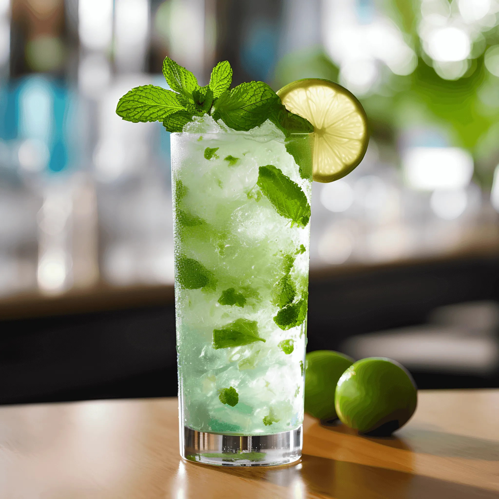

Vamos aos ingredientes : Um Ramo de Hortelã (Aproximadamente 10 folhas),50ml de Rum Branco, 20ml de suco de
Limão Tahiti ,Água com gás e Gelo
- Retire as folhas de hortelã do ramo e lave bem
- Após lavar, Pegue um copo longo, dê uma batidas no hortelã para soltar o aroma e coloque-a dentro do copo
- Adicione o Rum Branco , o suco de limão e com uma "Bailarina" , esmague um pouco as folhas com os demais
ingredientes (Obs: Isso vai emcorporar mais o gosto do hortelã)
- Após alguns segundos , pegue a coqueteleira e coloque gelo dentro , com o macerador esmague o gelo até ele
ficar bem triturado,acrescente no copo longo,lembre-se de deixar um espaço para completar com água com gas, e
mexa bem com a "bailarina"
- Para finalizar , acrescente a água com gás e decore com folhas de hortelã e uma fatia de limão.